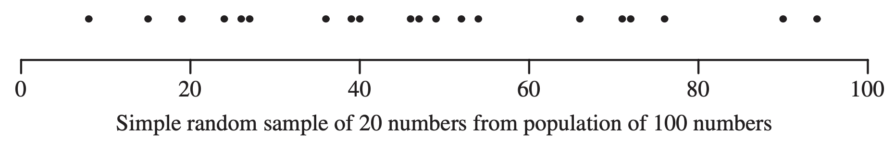
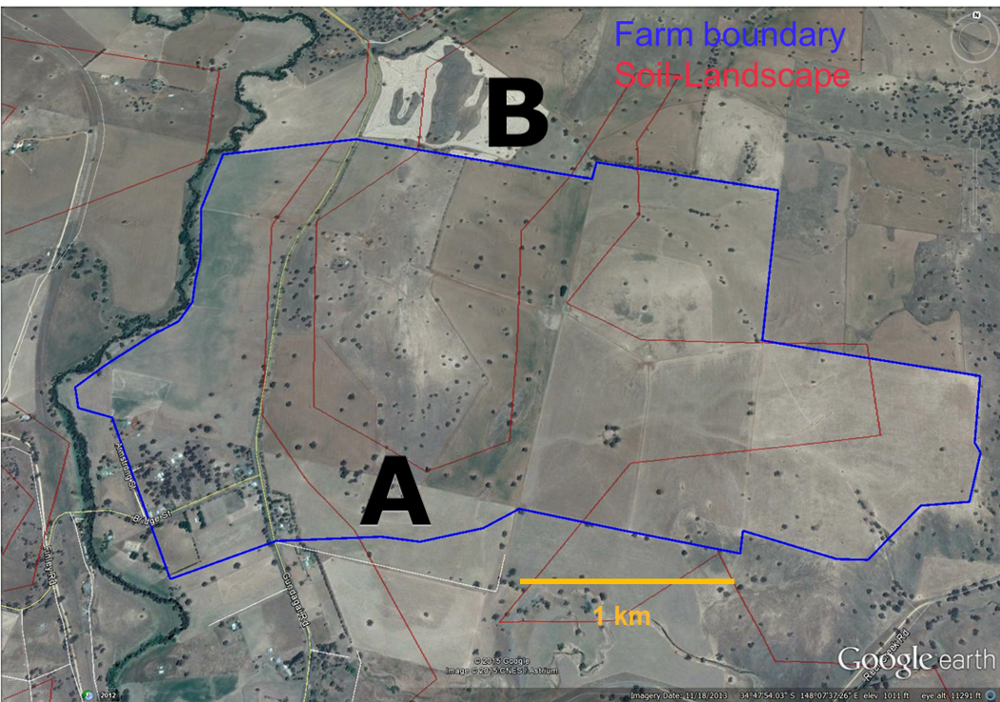

Lecture 02b – Sampling designs II
ENVX2001 Applied Statistical Methods
Feb 2026
Welcome back!
In the last lecture…
- We learned about simple random sampling
- Each unit had an equal chance of being selected
- We calculated confidence intervals for population estimates
- We saw some limitations of this approach (not always representative)
Simple random sampling
Each unit has an equal chance of being selected.
Not always the case, but still a good technique.
Simple random sampling
Each unit has an equal chance of being selected.
Not always the case, but still a good technique.
Simple random sampling: potential problems
Imagine tossing 10 random points onto a landscape.
By pure chance…
- We might miss some important areas entirely
- Or sample some areas too much
This is more likely when:
- Sample size is small
- The landscape has distinct zones
Simple random sampling: theoretical example
If an area has:
- 80% grassland
- 20% wetland
With simple random sampling:
- We expect ~8 samples in grassland, ~2 in wetland
- But by chance, we might get:
- 10 grassland, 0 wetland!
- Or 6 grassland, 4 wetland
But what if we have more information about the population?
Soil carbon example
Soil carbon

Different land types
- Land type A covers 62% of the area, land type B covers 38%
- Type A has a higher chance of being selected with simple random sampling
- Can we use this information to our advantage?
Simple Stratified random sampling
Stratified random sampling
3 steps
- Divide the population into homogeneous subgroups (strata).
- Sample from each stratum using simple random sampling.
- Pool (or combine) the estimates from each stratum to get an overall population estimate.
Real-world example
If studying plant biodiversity in a national park:
- Step 1: Divide park into strata (e.g., forest, grassland, wetland)
- Step 2: Take random samples within each habitat type
- Step 3: Combine data to estimate overall biodiversity, giving proper weight to each habitat’s area
Strata rules
Strata are…
- Mutually exclusive and collectively exhaustive (simple explanation: every sample belongs to exactly one stratum – no overlaps, no leftovers)
- Homogeneous - Samples within a stratum should be similar to each other (less variable than the overall population)
- Each stratum must be sampled - The goal is to ensure every important group is represented

Good vs. poor stratification choices
Everyday examples
Good strata
- University students: Undergrad, Masters, PhD
- Forest types: Deciduous, Coniferous, Mixed
- Income levels: Low, Medium, High
Poor strata choices
- Interests: Sports fans, Music lovers, Foodies (a person can be in multiple groups)
- Water quality: Clean, Somewhat polluted (too subjective, not clearly defined)
Advantages
We address:
- Bias. Each stratum is sampled, so the sample is representative of the population.
- Accuracy. Each stratum is represented by a minimum number of sampling units.
- Insight. We can compare strata and make inferences about the population.
Does this make simple random sampling obsolete?
- No. Still a good technique.
- With large enough samples, the two methods will converge.
- Chance of not selecting a unit from a stratum is always there, but reduces as the sample size increases.
Stratified random sampling: estimates
What are we trying to achieve with our calculations?
The statistical journey
Once we have our stratified sample, we need to:
- Estimate the population central tendency: Calculate the pooled mean
- Quantify our uncertainty: Calculate the pooled standard error
- Create an inference tool: Build a confidence interval
- Make decisions: Compare estimates, test hypotheses
All of these steps must account for our stratified design.
The statistical workflow for stratified sampling
Four key steps:
- Pooled Mean (\(\bar{y}_{s}\)): Sum of (stratum weight × stratum mean)
- Best estimate of the population parameter
- Pooled Standard Error: \[SE(\bar{y}_{s}) = \sqrt{\sum w_i^2 \times \frac{s_i^2}{n_i}}\]
- Accounts for stratum weights and within-stratum variability
- t-Critical Value: Based on \(df = n - L\) and α = 0.05
- Accounts for sample size in uncertainty estimates
- Confidence Interval: \[\text{Pooled mean} \pm (t-\text{critical} \times SE(\bar{y}_{s}))\]
- Range likely containing true population mean
Accounting for strata using “weight”
Weighted estimates
- We need to “weigh” the estimates from each stratum to account for the different stratum sizes and inclusion probabilities.
- Most of the time, we use the stratum size as the weight to calculate weighted estimates.
- The overall population estimate is the sum of the weighted estimates from each stratum, i.e. we pool the individual strata information into a single, overall population estimate.
Example
- A forest contains two types of trees: A and B, with 60% and 40% of the population, respectively.
- We want to estimate the mean height of the trees.
- Take 10 height measurements, of which 7 are randomly selected from type A and 3 are randomly selected from type B.
- The pooled estimate for the mean height of the trees is: \[0.6 \times \text{average height of A} + 0.4 \times \text{average height of B}\]
Data story: soil carbon
Soil carbon data
Our case study
Soil carbon content was measured at 7 locations across the area. The amounts were: 48, 56, 90, 78, 86, 71, 42 tonnes per hectare (t/ha).
Setting up the data in R
We know which land type each sample came from:
Pooled mean \(\bar y_{s}\)
The pooled mean is our best estimate of the overall population mean, taking into account the different stratum sizes.
\[\bar{y}_{s} = \sum_{i=1}^L \bar{y}_i \times w_i\]
In simple terms:
- We calculate the mean for each stratum separately (\(\bar{y}_i\))
- We multiply each stratum’s mean by its weight (\(w_i\))
- We add these weighted means together to get the overall pooled mean
Calculating pooled mean: soil carbon example
We first define the weights \(w_i\) for each stratum based on their area:
Then we calculate the weighted mean:
This is like saying: “62% of our land has soil carbon like land type A, and 38% has soil carbon like land type B, so our overall estimate takes both into account in these proportions.”
Pooled standard error of the mean \(SE(\bar y_{s})\)
The formula looks similar to a standard error…
\[SE(\bar y_{s}) = \sqrt{\color{blue}{{\sum_{i=1}^L w_i^2}} \times \frac{s_i^2}{n_i}}\]
What’s different?
- Instead of a single variance term, we use the sum of weighted variances from each stratum
- The \(\color{blue}{w_i^2}\) term ensures we account for the relative size of each stratum
- Each stratum contributes its own variance (\(s_i^2\)) and sample size (\(n_i\))
\(t\)-critical value
Degrees of freedom \(df\)
\[df = n - L\]
where \(n\) is the total number of samples and \(L\) is the number of strata.
- The degrees of freedom tells us how much “free information” we have for making estimates
- For stratified sampling, we lose one degree of freedom for each stratum
- Example: If we have 12 samples in 3 strata:
- The degrees of freedom is \(12 - 3 = 9\)
- Think of it this way: 9 samples can be placed anywhere, but we must have at least 1 sample in each of the 3 strata
95 % Confidence interval for stratified random sampling
The formula
\[95\%\ CI = \bar y_{s} \pm t^{0.025}_{n-L} \times SE(\bar y_{s})\]
where \(L\) is the number of strata, \(n\) is the total number of samples, and \(\bar y_{s}\) is the weighted mean of the strata.
In simple terms:
- We’re creating a range where we’re 95% confident the true population mean lies
- We start with our best estimate (the pooled mean \(\bar y_{s}\))
- We add and subtract a “margin of error” (which depends on our sample size and variability)
- The margin of error = \(t\)-critical value × standard error
Visualising this:
Lower bound ← [Pooled mean - Margin of error] ... [Pooled mean + Margin of error] → Upper bound95 % Confidence interval for stratified random sampling
Putting it all together
varA <- var(landA) / length(landA) # variance of the mean for A
varB <- var(landB) / length(landB) # variance of the mean for B
weighted_var <- weight[1]^2 * varA + weight[2]^2 * varB
weighted_se <- sqrt(weighted_var)
ci <- c(
L95 = weighted_mean - t_crit * weighted_se,
u95 = weighted_mean + t_crit * weighted_se
)
ci L95 u95
61.04864 76.68803 Comparison
Simple random vs. stratified random sampling
What if we had used stratified random sampling instead of simple random sampling (and collected the same amount of data)?
What differences can you see?
Code
| Design | Mean | Var (mean) | L95 | U95 | df |
|---|---|---|---|---|---|
| Simple Random | 67.29 | 50.83 | 49.85 | 84.73 | 6 |
| Stratified Random | 68.90 | 9.30 | 61.00 | 76.70 | 5 |
Visual comparison of 95% confidence intervals
# Creating a visual comparison of confidence intervals
ggplot(compare, aes(x = Design, y = Mean)) +
geom_point(size = 3) +
geom_errorbar(aes(ymin = L95, ymax = U95), width = 0.2, size = 1) +
labs(title = "95% Confidence Intervals by Sampling Design",
y = "Soil Carbon (tonnes/ha)",
x = "") +
theme_minimal(base_size = 14) +
annotate("text", x = 2, y = 55,
label = "Stratified sampling gives a\nnarrower confidence interval\n(more precise estimate)",
color = "blue")Key insights:
- Both methods give similar estimates of the mean
- Stratified sampling produces a much narrower confidence interval
- The variance of the mean is about 5 times smaller with stratified sampling
- This means stratified sampling is much more precise with the same number of samples
Efficiency
What is sampling efficiency?
- A measure of how much “bang for your buck” you get with different sampling methods
- Calculated as a ratio: \[\text{Efficiency} = \frac{\text{Variance of SRS}}{\text{Variance of Stratified}}\]
In simple terms:
- Efficiency > 1: Stratified sampling is better (more precise with same sample size)
- Efficiency = 5 means: You’d need 5 times as many samples with simple random sampling to get the same precision as stratified sampling
In R
How many samples would we have had to collect using simple random sampling to achieve the same precision as our stratified sample?
So we would need about 38 samples with simple random sampling to get the same precision that we achieved with just 7 samples using stratified sampling!
Tips on implementation
- The most difficult part is to identify the strata and assign the sampling units to the strata
- Common stratification variables in environmental science:
- Spatial: elevation bands, soil types, vegetation zones
- Temporal: seasons, time of day, growth stages
- Management: treatment types, land-use history
- Strata sampling size: allocate samples to strata based on the size of the strata, either proportional to:
- the size of the strata (e.g. 60% of area = 60% of samples)
- the variance of the strata (more samples where variation is higher)
Monitoring
What if we come back and do another set of soil carbon measurements?
The change in mean \(\Delta \bar y\)
Important considerations
- We want to measure change in soil carbon over time
- Key question: How do we select sites for the second measurement?
- Return to the same sites?
- Select completely new sites?
- This choice affects our statistical analysis (covariance)
Monitoring estimates
Change in mean \(\Delta \bar y\)
The difference between the means of the two sets of measurements.
\[\Delta \bar y = \bar y_2 - \bar y_1\]
where \(\bar y_2\) and \(\bar y_1\) are the means of the second and first set of measurements, respectively.
Uncertainty in change estimates
Variance of the change in mean \(Var(\Delta{\bar y})\)
This tells us how precise our estimate of the change is. It depends on:
\[Var(\Delta{\bar y}) = Var(\bar y_2) + Var(\bar y_1) - 2 \times Cov(\bar y_2, \bar y_1)\]
In simple terms:
- The uncertainty in our change estimate comes from the uncertainties in both measurements
- However, if we sample the same sites twice, they are related to each other (covariance)
- This relationship usually reduces the overall uncertainty in our change estimate
Important: Visiting the same sites twice (paired sampling) usually gives more precise estimates of change than visiting different sites each time!
Covariance and site selection
Quick decision guide
- Same sites? Use paired approach:
- Sites are the same in both visits
- Use paired t-test
- Account for covariance between visits
- Different sites? Use independent approach:
- New random sites in second visit
- Use two-sample t-test
- No covariance between visits
What is covariance?
Covariance measures how two measurements relate to each other:
Example with soil carbon:
- Site 1: First visit = 90 t/ha, Second visit = 95 t/ha
- Site 2: First visit = 48 t/ha, Second visit = 52 t/ha
- Site 3: First visit = 71 t/ha, Second visit = 75 t/ha
What do you notice? Sites with high carbon in the first measurement still have high carbon in the second measurement (positive covariance).
Why this matters: Knowing the first measurement helps us predict the second one, reducing uncertainty in our estimate of change.
Practical takeaway: When measuring change over time, returning to the same sites usually gives more precise results because it removes site-to-site variation.
Calculating the 95% CI for the change in mean
The formula looks similar to before:
\[95\%\ CI = \Delta \bar y \pm t^{0.025}_{n-1} \times SE(\Delta \bar y)\]
In plain language:
- We have our best estimate of the change (the difference between the two means)
- We add and subtract a margin of error to create a range
- We’re 95% confident that the true change falls within this range
The standard error of the change \(SE(\Delta \bar y)\)
- This tells us how precise our estimate of the change is
- It’s complicated to calculate by hand, especially when we visit the same sites twice
- If we visit the same sites twice, we need to account for their relationship (covariance)
Good news! You don’t need to calculate this by hand!
- R can do these calculations for you using the
t.test()function - For same sites: use
paired = TRUEoption - For different sites: use
paired = FALSEoption - We’ll practice this in the lab!
Thanks!
Questions?
This presentation is based on the SOLES Quarto reveal.js template and is licensed under a Creative Commons Attribution 4.0 International License.